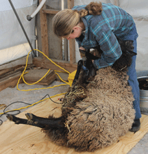
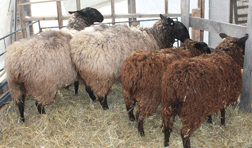
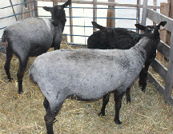
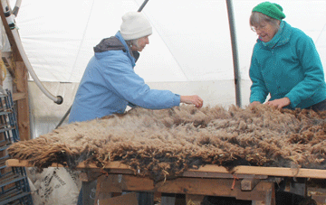
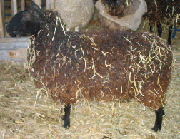
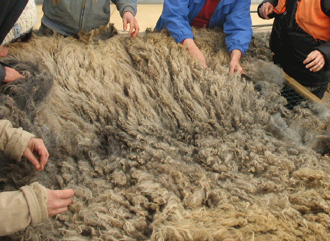
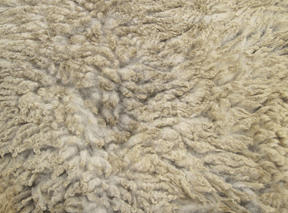
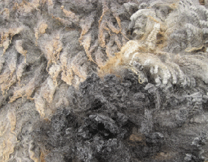
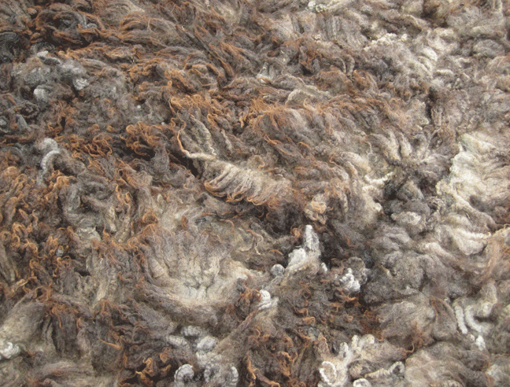

|  |  | |||||||||||||||||
| Shearing The sheep’s fleece is shorn in mid-March, about four weeks before the ewes give birth. My Border Leicester and Coopworth crosses are sheared once a year. The fiber is about 4" to 5" long. After the fleece is sheared off the sheep, it is carried to a skirting table and laid flat, cut side down. |
||||||||||||||||||
| Before |  | |||||||||||||||||
|  | After | |||||||||||||||||
|  |
When sheep eat hay and lie in straw bedding their fleece gets full of vegetable matter (VM). Now I put coats on my sheep, to keep their fleeces clean.
|
|||||||||||||||||
| Friends come to the shearing and and help skirt and clean the fleece. Fleece that is soiled, full of VM, matted or irregular is removed. |
||||||||||||||||||
|  | ||||||||||||||||||
|  | ||||||||||||||||||
| Fleece Words and photos cannot convey the incredible experience of feeling a warm newly-shorn fleece, thick and soft with a touch of lanolin. |
||||||||||||||||||
|  | ||||||||||||||||||
| Left is outside, lower right is cut sheared side of fleece. | ||||||||||||||||||
| Left is outside, right is cut sheared side of fleece.
Each fleece is different. Ewe, ram and lamb fleeces have their own character. Fleeces also change with a new breeding ram. |
||||||||||||||||||
|  | ||||||||||||||||||